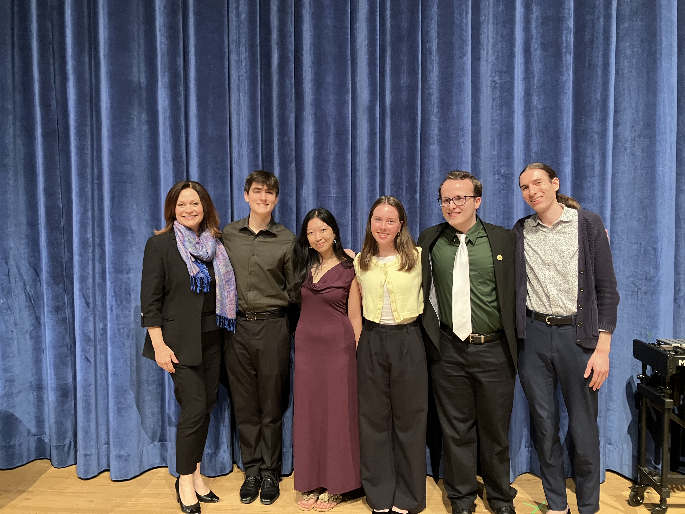
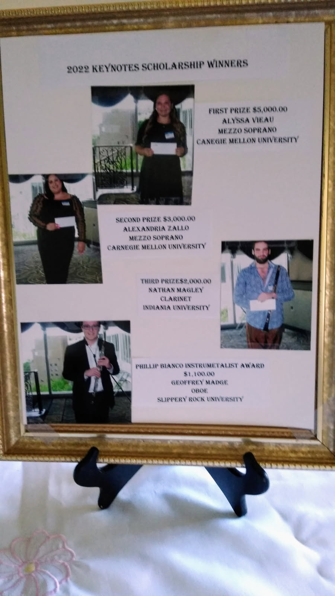

May 9, 2026
Mount Lebanon High School
Fine Arts Theater
Pittsburgh, PA 15228
OVER $18,000 IN CASH PRIZES!
FIRST PRIZE - $7,500
SECOND PRIZE - $5,000
THIRD PRIZE - $2,500
FOURTH PRIZE - $1,500
Additional instrumentalist award: $1,500 from the Phillip Bianco Memorial Fund
Keynotes Music Scholarship has awarded over $490,000.00!
Rules about the Scholarship
- Auditions are held annually in May of each year at the Fine Arts Theater of Mount Lebanon High School, Pittsburgh, PA. Auditions must be done in-person-no videos!
- Contestants must be current legal residents of Pennsylvania for 1 year or, if out-of-state and attending a school in PA, please provide a proof of a Pennsylvania address; ie: campus address (university mailings) or apartment (some use utility bill)
- All applicants must be full-time music majors currently enrolled in a music school or music department of a college or university
- All applicants must be enrolled in a music program for the following year
- Graduating high school students enrolled as a full-time music major in the fall are eligible to apply
- Voice applicants must be under 30 years of age by June 1.
- Instrumental applicants must be under 26 years of age by June 1
- First place winners are ineligible to compete again
2026 Scholarship Application
Welcome to all students interested in applying for a scholarship offered by Keynotes Music Scholarship.
A minimum of $18,000 worth of Scholarships include:
- Award Prizes for 2026 (instrumentalist or vocal award):
- First Prize - $7,500.00
- Second Prize - $5,000.00
- Third Prize - $2,500.00
- Fourth Prize Bill Worrel and Patricia Stack Scholarship - $1,500.00
- We are also awarding the Phillip Bianco Memorial Scholarship (instrumentalist award) at $1,500.00
Auditions will be held on Saturday May 9, 2026 at the Fine Arts Theater of Mount Lebanon High School, Cochran Road, Mount Lebanon, PA.
Applications must be postmarked by April 30, 2026. Because we are restricted to 20 contestants and have had a waiting list in recent years, we strongly urge you to return the completed application package as soon as possible.
Additional Audition Guidelines
- Vocalists must include at least two different foreign language selections.
- Each applicant will be allotted 15 minutes for the audition. Please use all your time.
- Applicants must provide their own accompanist if needed.
- Memorization is preferred, but NOT required.
- For the audition, you will be expected to perform one selection representative of each of the following time periods: • Baroque (1600-1750)
• Classical (1750-1820)
• Romantic (1820-1920)
• 20th Century Contemporary (1900-present)
Keynotes Music Competition 2025
A magnificent display of talent, discipline and passion were the highlights of this year’s music competition on May 10, 2025. The competition was at Mount Lebanon’s Fine Arts Theater and it was a full day with 17 participants. We heard from violin, viola, flute, piano, marimba, vibraphone, double bass and oboe! Not to mention the power and magic of the human voice with our men and women vocalists.
Our judges were professors Sari Gruber (vocal judge) from CMU and Andy Sledge (instrumental judge) from West Virginia University. Each participant had 15 minutes to complete pieces of music from the baroque, classical, romantic and 20th century/contemporary periods. So much talent made picking the winners a challenge! A celebratory dinner for winners was held the same day at the Doubletree in Greentree.
We are actively planning next year’s competition date and prizes, which will be announced. We will be accepting applications beginning September 2025.
2025 Scholarship Winners


- First Place ($7,500): Beatrice Khor (piano) from Duquesne University
- Second Place ($5,000): Greta Coleman (viola) from Mount Lebanon High School
- Third Place ($2,500): Devin O’Brien (double bass) from Curtis Institute of Music
- Phillip Bianco Memorial Award ($1,100): Geoffrey Madge (oboe) from West Virginia University
2024 Scholarship Winners

- First Place ($7,500): Isaac King (viola) from McDuffie Center for Strings
- Second Place ($5,000): Phoebe Chen (flute) from Carnegie Mellon University
- Third Place ($2,500): Wallis Lucas (soprano) from Carnegie Mellon University
- Phillip Bianco Memorial Award ($1,100): Brian Curtin (violin) from Carnegie Mellon University
2023 Scholarship Winners
- First Place ($7,500): Joshua Lee (violin) from Carnegie Mellon University
- Second Place ($5,000): Isaac King (viola) from McDuffle Center for Strings
- Third Place ($2,500): Audrey Logan (soprano) from Oklahoma City University
- Phillip Bianco Memorial Award ($1,100): Richard Palermo (violin) from Carnegie Mellon University
2022 Scholarship Winners

- First Place ($5,000): Alyssa Vieau (mezzo soprano) from Carnegie Mellon University
- Second Place ($3,000): Alexandria Zallo (mezzo soprano) from Carnegie Mellon University
- Third Place ($2,000): Nathan Magley (clarinet) from Indiana University
- Phillip Bianco Memorial Award ($1,100): Geoffrey Madge (oboe) from West Virginia University
For more information, please contact: Lori Walter – Email: houdini5@hotmail.com